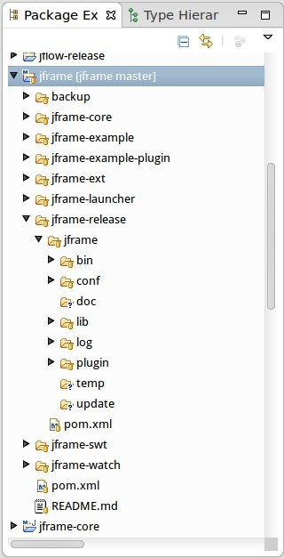
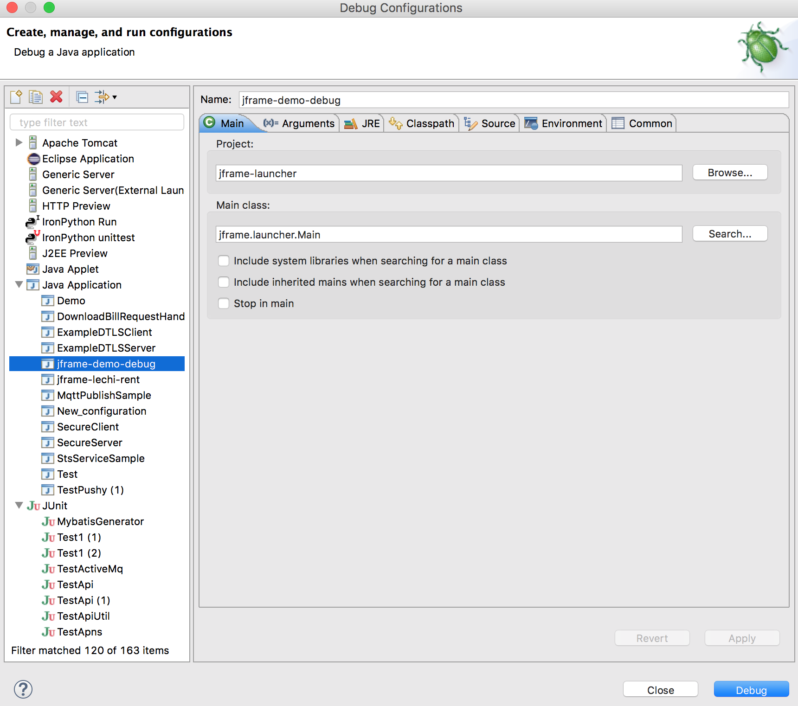
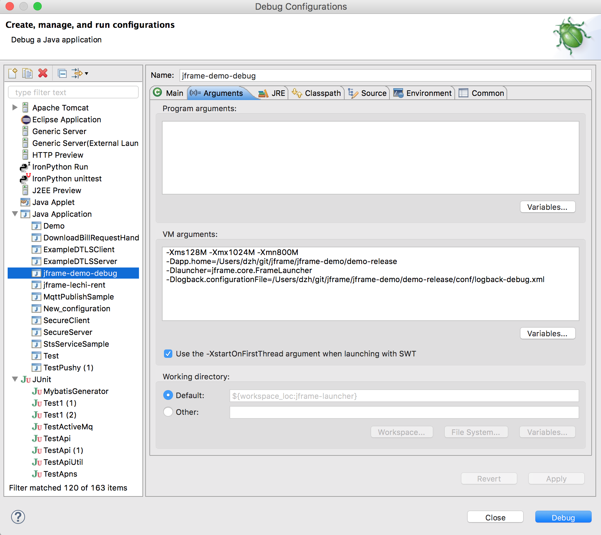
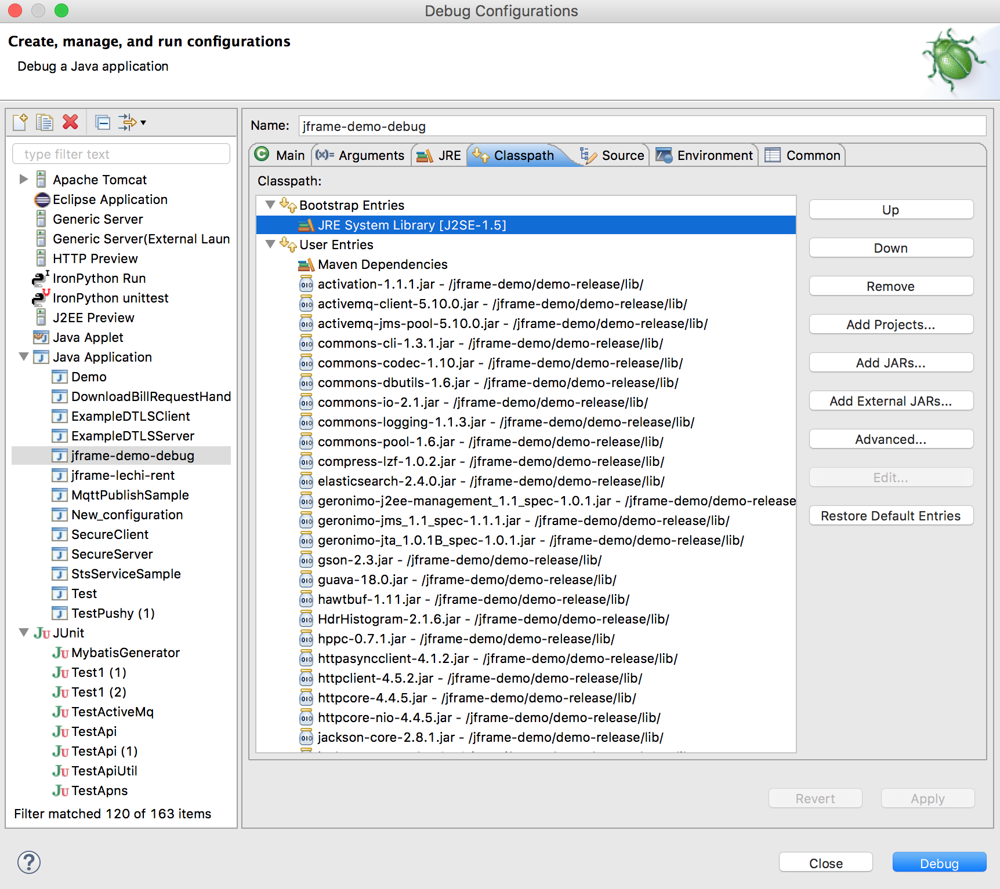
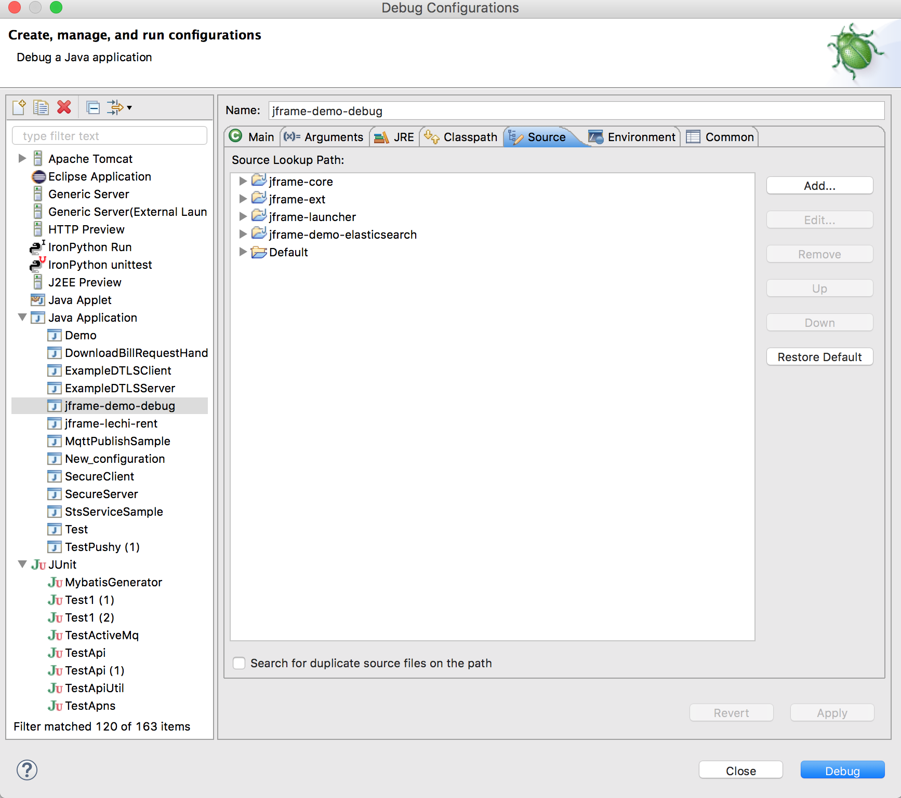

Jframe Manual
1 工程目录
1.1 下载地址
git clone https://github.com/dzh/jframe.git
1.2 工程说明
1.2.1 项目checkout目录结构
注: 以下结构可能与实际稍不同
- jframe #checkout目录
- doc #项目文档
- jframe #jframe框架根目录，注意在eclipse里选择它install,不要在下面的module项目上install
- backup #存放一些文件，用户备份
- jframe-core #框架核心
- jframe-example-plugin #演示插件编写的示例插件
- jframe-ext #jframe-core的扩展
- jframe-launcher #启动Main函数
- jframe-release #install构建的jframe结构，一定要在jframe根目录install
- jframe #这个目录之下，代表了jframe框架的程序结构布局
- bin #启动、停止脚本
- conf #配置文件，包括config.properties、vmargs、logback.xml等
- doc #文档
- lib #公共lib库,动态dll|so默认目录,由系统类加载器加载
- log #默认日志输出目录
- plugin #默认插件目录,下面的插件有插件类加载器加载
- temp #默认临时目录,如存放进程pid文件等
- update #默认系统更新目录,upg更新插件使用
- jframe-swt #jframe的swt插件实现,这个示例还没做好,目前演示了将jframe用于C端的方式
- jframe-watch #资源更新插件,跟踪配置文件的修改并通知其他插件
- jframe-plugin #jframe实现的一些插件
1.2.2 TODO Maven说明
- jframe项目使用eclipse+maven开发和管理
- 在eclipse里通过在jframe和jframe-plugins上install后，将直接构建最后的发布格式
- 如jframe构建后的jframe-release即所有使用jframe框架应用程序的一般目录布局（可以通过config.properties定制）
- jframe-plugins构建说明
2 安装/使用
2.1 运行环境
- oracle jdk1.5以上
- 支持linux、windows
- Eclipse+Maven插件+git插件
2.2 构建启动
- 将clone到本地目录里的jframe项目导入到eclipse里

Figure 1: Eclipse里jframe框架项目结构
- 在项目'jframe'上右键
3 框架配置
3.1 启动脚本
3.2 框架日志
3.3 config.properties
3.4 vmargs[-win]
4 Jframe
4.1 jframe-launcher
4.1.1 启动过程
- Main 守护进程main函数
- FrameMain
4.1.2
- v1.2.0版本开始功能, 和jframe-core的依赖关系倒置
- 设计目标让launcher
4.1.3 jframe.launcher.api
4.1.4 use launcher
5 Plugin
5.1 插件示例
5.2 开发插件
5.2.1 定义插件类
5.2.2 插件配置文件 - plugin.properties
5.3 插件使用技巧
5.3.1 插件间交互~Policy
5.3.2 插件间交互~Message
- 消息说明
- 所有实现jframe.core.msg.Msg的类都可以作为插件间交流的消息 继承PluginMsg实现自己的Msg 常用TextMsg
- Msg结构
- type int 消息类型 插件根据type读取自己感兴趣的Msg
- meta 存储辅助数据 可以视为一个map数据结构
- value 消息内容 可选 可以用meta方式
- 发送消息
- Plugin必须继承自PluginSender或PluginSenderRecver
- plugin.send(Msg<?> msg) 发送消息
/注: 插件里的类都可以使用@InjectPlugin将插件实体注入 /
- 接收消息
- Plugin必须继承自PluginRecver或PluginSenderRecver
- 订阅感兴趣的消息
- Plugin注解@Message(msgTypes = {MsgType})
- 重写interestMsg(Msg<?> msg) 若返回true标示接收这个消息
/注: 使用注解方式时, 注意@Message的其他选项设置和父类注解内容保持一致 /
- plugin.doRecvMsg(Msg<?> msg) 接收消息
- 总结
Message机制实现异步调度, 解藕系统部件间的依赖, 实现可插拔的灵活功能调度
5.3.3 插件间交互~Service
- 插件服务特性说明
- 插件服务不依赖于插件启动次序
- 服务是单例的
- 插件卸载时, 定义在插件里的服务也将卸载, 并清除已注入的服务实例
- 服务是基于接口的同步注入编程模型，方便插件间模块交互
- 定义插件服务
- 编写服务接口 通过注解定义服务，@Service(id='服务唯一ID',clazz='服务实现类')
- 编写服务实现类 接口和实现目前要求在同一个插件内
- 定义服务 plugin.properties里`Plugin-Service`，服务间用空格分隔(默认作为Export-Class导出)
- 使用插件服务
- 导入服务接口 plugin.properties里`Import-Class`，服务间用空格分隔
- 注入服务 @InjectService(id='服务唯一ID')，使用服务的类必须加@Injector
- 总结
Service机制实现同步调度,
- 示例插件服务
5.3.4 Policy vs Message vs Service
- Policy 消息共享
- Message 异步编程
- Service 同步编程
5.3.5 获取配置更新
5.4 插件注解说明
5.4.1 插件相关
- @Plugin 插件配置
- @Message 插件消息配置
5.4.2 服务相关
- @Service 定义插件
- @Start 服务实例初始化启动
- @Stop 服务示例卸载时执行
5.4.3 注入
- @Injector 说明类使用注入功能，类没有这个注解的则下面的注解无效
- @InjectPlugin 注入插件实例
- @InjectService 注入服务
6 调试/性能
6.1 远程调试
6.1.1 调试守护进程(Main)
6.1.2 调试框架进程(FrameMain)
- conf/vmargs或vmargs-win文件中，开启jvm远程调试
#+STARTEXAMPLE -Xdebug -Xnoagent -Djava.compiler=NONE -Xrunjdwp:transport=dtsocket,address=6666,server=y,suspend=n server＝y jvm作为调试服务端 suspend=n jvm启动后直接运行，若y则jvm启动后挂起，在调试客户端连接后才继续执行 address=6666 jvm调试服务端监听端口6666 #+ENDEXAMPLE
- eclipse配置远程调试(以上面的配置为例)

6.2 本地调试
6.2.1 在Eclipse中调式jframe项目
注: 以下说明以jframe/jframe-demo工程为例
- 构建工程，如cd jframe-demo | mvn install， 打包目录在jframe-demo/demo-release
- 配置Eclipse Debug选项，如jframe-demo-debug
- Main选项,配置启动Main函数

- Arguments选项, 主要配置3项: app.home应用根目录,launcher默认FrameLauncher,logback.configurationFile日志文件(可选,示例使用logback)

- Classpath选项, 在User Entries里加入构建时项目依赖的jar，如示例demo-release/lib/*.jar

- Source添加调式项目源码

- 上述配置配好，控制台会有日志输出，在源码中设置断点就可以debug
6.3 使用jvisualvm
- 性能监控配置
7 核心插件
7.1 jframe-watch
7.1.1 功能
7.1.2 配置
7.2 jframe-upg
7.3 jframe-rcp
8 高级主题
8.1 管理jframe
8.2 扩展jframe
9 源码分析
9.1 启动/关闭
9.2 加载插件
9.3 消息分发
9.3.1 进程内分发
jframe.core.dispatch.DefDispatcher
9.3.2 队列分发
jframe.ext.dispatch.ActivemqDispatcher